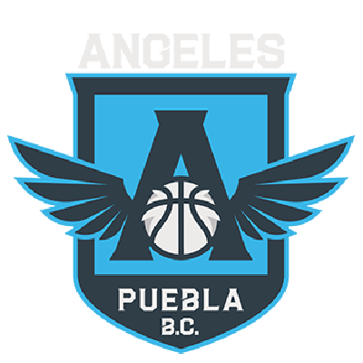
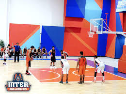
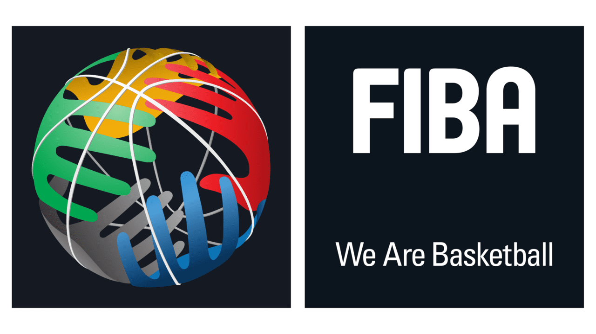
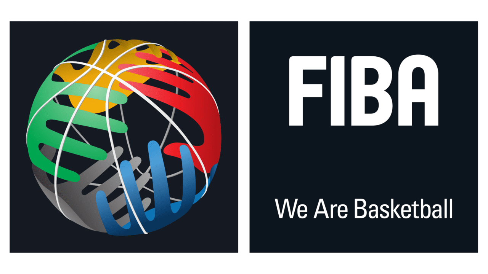

CNMB
| Escudo |
|---|
|  |
| Datos |
| Nombre: Angeles de Puebla Anio de Fundacion: 2007 Ciudad: Puebla, Puebla Estadio: Gimnasio "Miguel Hidalgo" Capacidad: 4,000 Sitio web: https://www.lnbp.mx/Angeles/ |
| Historia |
|
Fue fundado en el año 2007 y comenzaron su participacion en la LNBP en la temporada de ese mismo año, duro unicamente por cuatro temporadas para luego ser desactivado despues de la temporada 2010-11, en 2018 el equipo regreso para la temporada 2018-19 pero por problemas economicos y falta de buenos resultados el equipo fue retirado. |
| Estadio |
|  |
 
